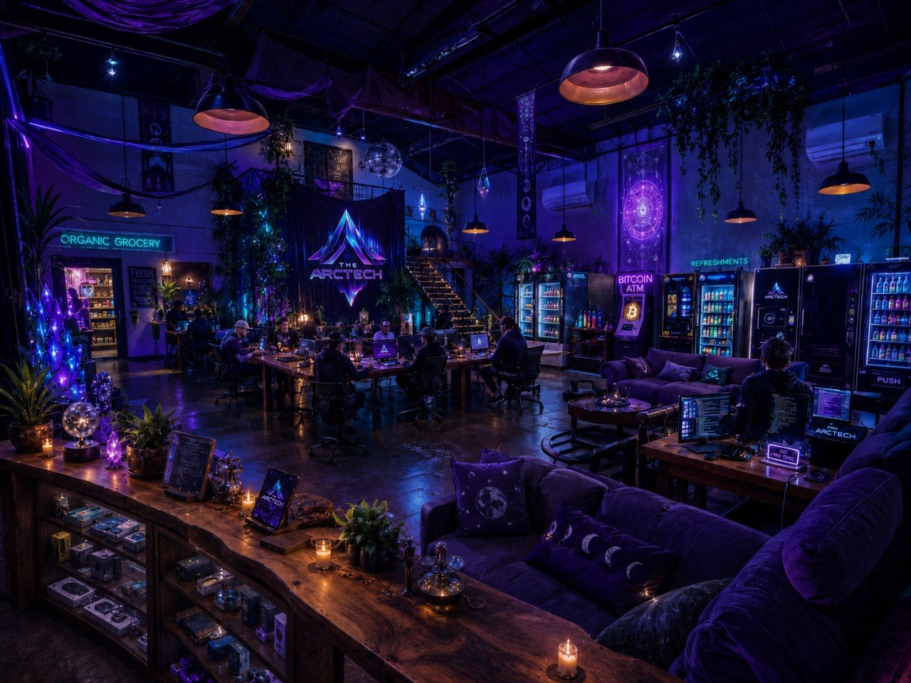

Building a future worth inheriting.
ArcTec Center (formerly Sapien Center) is a sovereign tech campus in East Austin — a physical infrastructure layer for the open source builder community.
"The Arctic" is both a place and a metaphor: the frontier, the edge of the map, where the next civilization is being built before the current one knows it's happening.
Radius Grocery · Kitchen 484
Data Center · Tiny Homes · Coffee Shop
get resourced.
The builders of tomorrow require deep work environments suited to both focused development and genuine community. They need to transition fluidly from work to play to social — and most places can't support that.
Open source developers are nomadic by necessity — they follow projects, not places. This creates a constant cost: rebuilding community, finding workspaces, sourcing tools, and re-establishing context every few months.
Cafés don't cut it. Remote work dilutes community. Corporate offices enforce hierarchy. ArcTec is built for the third option: a permanent deep work hub that developers can call home across visits.
"The internet can't be fixed with a website or an app. It needs an entire new refactoring — and the people doing that need a place to do it from."
development center.
Open source ecosystems have unique problems. Startups are typically underfunded. Developers face housing instability, resource gaps, and a missing sense of home. ArcTec solves the stack below the code.
Most open source projects run on volunteer time and thin grants. The people building them can't afford the infrastructure that would let them build faster. ArcTec subsidizes that cost through membership, not VC funding.
Austin is expensive. Developers new to the city, or cycling through on a project sprint, need short-term housing that doesn't require a 12-month lease. The tiny home cluster at ArcTec fills that gap directly.
Developers who miss community burn out. The mental health toll of nomadic tech work is real and underdiscussed. ArcTec provides the social and emotional scaffolding that keeps builders in the game long-term.

The community of the future — an open source collective run through decentralized governance, giving every member equal access to manifesting their mission.
Decentralized governance means no single person owns the outcome. Decisions about the space, events, and direction are made collectively. Members vote with their time and resources, not just their membership fee.
20 events per month spans educational workshops, technical deep-dives, social events, and open build nights. The cadence is designed to keep the space active and the network tight without burning anyone out.
A Private Member Association gives the community legal standing as a sovereign entity. Members access the space, tools, food, lodging, and network through their membership — not through a third-party platform that can deplatform them.
The value of the ArcTec network is not just in who attends events. It's in what those people are building simultaneously — 14 active startups sharing talent, code, hardware, and insight across a single community layer.
A research & development nonprofit that facilitates spaces for developers to build — running 14 startups across 4 Austin locations simultaneously, giving birth to a new internet with no single point of failure.
Labs 484 is a nonprofit because the mission is infrastructure, not profit. The goal is to accelerate the production of open source sovereign tech by removing the friction that typically kills early-stage projects before they ship.
The multi-location footprint across Austin means builders can move between spaces and communities without losing their Labs 484 context. Each location serves a different function in the overall network.
Archipelago is a Labs 484 venture — a simplified Bitcoin node and mesh network system designed to make digital sovereignty accessible to everyone, not just developers. Founded by Tasedon (Poly Nakamoto). Built by the ArcTec team.
Everything you need to become a fully equipped node runner and achieve digital sovereignty — located at ArcTec Center, available to members and the public.
Most noderunner hardware is purchased online, configured in isolation, and never tested in a community context. The Noderunners Store provides hands-on guidance, pre-configuration, and ongoing support — not just a product.
The store is the retail face of Archipelago — the flagship Labs 484 project. As Archipelago ships, the store becomes the primary distribution and onboarding channel for hardware units.
Hardware retail + configuration services + ongoing support memberships. Member pricing for ArcTec Circle members. Public pricing for walk-in and online sales.
Clean, organic, and natural foods located at ArcTec — supporting decentralized food logistics and local food security for the community and the public.
The conventional separation of tech and food infrastructure is a bug, not a feature. When builders don't have to leave campus for groceries or a clean meal, they stay in flow longer. Food sovereignty is part of the full-stack ArcTec thesis.
Radius Grocery is also a node in a broader decentralized food logistics model — sourcing directly from local producers and providing an alternative to centralized grocery chains for the Austin community.
Sublease income from Radius Grocery is a recurring, passive contribution to ArcTec Center's total revenue. As campus foot traffic grows, grocery revenue scales with it.
A food service kitchen for the private members of ArcTec — organic, local, and grass-fed food that fuels the community and grows the network.
Kitchen 484 operates as a food truck and on-site kitchen, serving private ArcTec members as a core service. The food truck model keeps overhead low while maximizing flexibility as campus capacity grows.
Food service is integrated into the ArcTec membership model — members receive access to Kitchen 484 as part of their overall package. This creates a reliable demand floor independent of walk-in traffic.
Kitchen 484 sources from Radius Grocery — closing the loop between food retail and food service on campus. As Radius Grocery's local supply chain matures, Kitchen 484's ingredient quality and cost efficiency both improve.
Shared meals are one of the most effective community formation tools available. Kitchen 484 makes the ArcTec community stickier — members who eat together stay together, and they refer others.
A detailed breakdown of revenue by source — membership, hardware, grocery, food service, and sublease — along with the growth path to $150k/month is forthcoming.
Financial detail has been flagged for inclusion. Full breakdown will be added once revenue modeling is complete.
A 5-year partnership that delivers a fully built sovereign tech campus scaling at 5% revenue per week.
Complete deal terms including revenue share percentage, reporting cadence, use-of-funds breakdown, and the 24-month ramp-to-revenue-share structure are forthcoming.
Contact Labs 484 to receive the full investment brief and schedule a conversation.